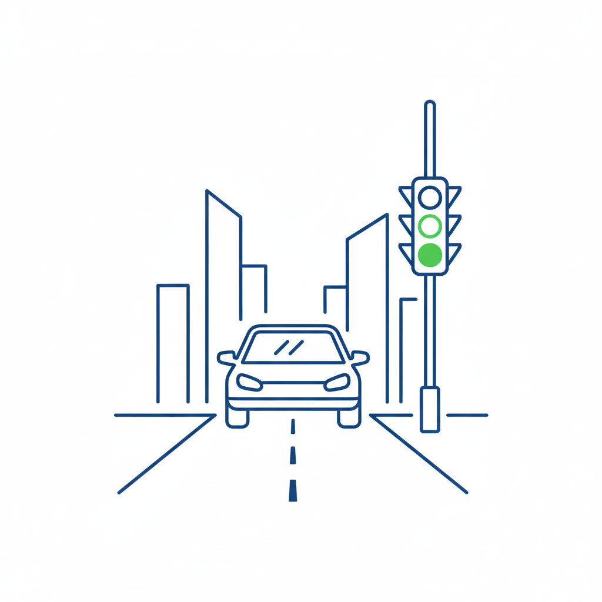

Navigating Street Driving
Click on a topic to reveal simple open-ended questions.
Urban & Residential Driving

Why Street Driving Skills Matter?
Mastering street driving ensures confidence in real-world scenarios. It involves not just control, but observation, anticipation, and decision-making in complex environments, crucial for passing the test and safe lifelong driving.
Mastering street driving ensures confidence in real-world scenarios. It involves not just control, but observation, anticipation, and decision-making in complex environments, crucial for passing the test and safe lifelong driving.
Common Learner Errors
- Inadequate Observation: Failing to check blind spots or mirrors thoroughly at junctions/roundabouts.
- Incorrect Lane Discipline: Driving in the wrong lane or wandering between lanes, especially on approach to turns.
- Poor Speed Control: Driving too fast in residential areas or too slow on main roads, failing to match the flow of traffic.
Junctions
Click for simple questionsApproach speed, observation, and correct lane positioning.
Simple Open Questions:
- "What clues can you see that tell you a junction is coming up?"
- "How do you decide the correct speed to approach this junction?"
- "What hazards do you need to look for before moving out?"
Roundabouts
Click for simple questionsLane selection, signaling, and timing to enter traffic.
Simple Open Questions:
- "How do you decide which lane to use on this roundabout?"
- "What do you need to look at to time your entry safely?"
- "Why is signaling correctly important for other drivers?"
Pedestrians
Click for simple questionsScanning for crossing pedestrians and reacting safely.
Simple Open Questions:
- "Where should you be looking to spot pedestrians early?"
- "How can you make sure you are ready to stop safely?"
- "What can you do to communicate with pedestrians?"
Speed Management
Click for simple questionsAdjusting speed to road conditions and limits.
Simple Open Questions:
- "How do road conditions affect your speed choice?"
- "What clues tell you that you are driving too fast for this road?"
- "Why is it safer to maintain a steady speed?"